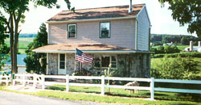
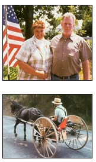

Firsthand: Reports from the Field
My husband, Jack, and I found our dream home three years ago along a back road in pastoral Lancaster County, Pennsylvania. The patchwork of fields, pastures and woods looks like a colorful quilt spread over the hills, and warm and cozy is how Jack and I feel in this valley.
Communities of Anahaptists-Amish and Mennonite people-founded this farming area nearly 300 years ago, and they remain the primary inhabitants today. Many are of the old Order, choosing to live as their ancestors did. These people dress plainly (the women wear dresses, aprons and bonnets) and travel by horse and buggy.
When Jack and I decided to escape the frantic pace of Philadelphia, we spent many weekends driving in the country, hoping to find a little fixer-upper. One such weekend, we ended up in an area called Churchtown, crossed an old covered bridge and spotted a vacant house just down the road with a "For Sale" sign out front. "Stop!" I cried.
We got out of the car and looked in the windows. The house appeared to have been vacant for some time. We could see that everything would have to be redone-stripped to the bare bones.
When we walked out back and saw the view, though, we both gasped. A little stream ran through the back yard, which bordered on a lush pasture. Beyond that, beautiful farms stretched as far as we could see. My heart beat faster. I just knew this was the home meant for us. I knew I could look at that view for the rest of my life and never get tired of its beauty and serenity. We called the real estate agent and made an offer on the spot.
We spent our weekends working on the house, but progress was so slow, we decided to take the summer off and move in-basically, camp out in the house.
Our first step was to put in a woodstove so we could pump water out of the well and heat it up on the stove for washing up and doing dishes. We had to redo all the electric wiring, and when we cut that line, we cut off the running water, too. Oil lamps served as lights, and our ice chest held cold drinks and such. We learned to get along without any frills.
Four months later, we were able to turn our electricity back on, which meant we had a few working electrical outlets and running water again. Although our electric lights were more convenient, they seemed too bright after living with the oil lamps for so long, so we switched to 25- 40-watt bulbs and still prefer the oil lamps on quiet evenings.
The major construction project was the second floor, which was only a half story with 6 feet of space on each side of the stairway. The sloped ceiling left little standing room, and the walls were hot pink! We removed the entire floor and built a completely new second story. We hired someone to rebuild the outer shell, and then, we took it from there. Fortunately, Jack is a cabinetmaker, so he always has been a natural at home improvement. He already knew how to do many of the basic things we needed: He put in our new plumbing and electricity, and he even taught me to lay ceramic tile in the kitchen.
Soon after moving in, we added a deck onto the back of the house, so we could sit and enjoy the view, and watch the wildlife. We set up several bird feeders, too, and have seen more than 60 different species of birds, including a migrating bald eagle last fall.
I am sure that the neighbors were a bit concerned when they heard that "folks from Philly" bought this house, but af ter they saw us carrying buckets of water from the well and living without electricity, they must have decided we were OK because they sure made us feel welcome. It was a pleasant surprise when they started to vis it, bringing fruit from their orchards and homemade sticky buns. People from as far away as 2 miles came by to introduce themselves; others would nod or stick their heads out and say. "Welcome to Churchtown!" as they trotted by in their carts and carriages.
I always have raised flowers, but until we moved into this house. I never had grown fruits or vegetables. The Mennonite farmer across the way readily lends a hand when any of our mechanical equipment breaks down, and his wife taught me how- to put up tomatoes. I was so excited with our first real corn on the cob! The next year, we added a second garden bed so w e could have spring and summer crops, and I put up 32 jars of peaches and several quarts of homemade applesauce and jam.
Last summer, I had surgery-and didn't have to cook for a week. Each day, a different neighbor brought in a full course dinner, complete with fresh pie and a candle for the table. Soon after, we were honored to be invited to an Amish church service, conducted in High German. It was fascinating to watch the ceremonial way things were done. At Christmas, I made pumpkin bread to share with all these neighbors, for we really do feel part of the community now.
Jack and I appreciate our mellower life here in Lancaster County in other ways, too. In Philadelphia, I worked as a critical-care trauma nurse in a hospital; here, I have a less stressful job in a retirement village. We're still short on insulation in sane spots, but to us, this Old house is a palace. We continue to work on it and to learn mere about this independent, carefree rural lifestyle. Here, we see more horses and carriages than we do cars, and children still play ball in the road. How could we possibly ask for anything else? To us, this is our little acre of freedom, and we thank God each clay to be so blessed.
Mother Earth News
|
 by Jann Dickinson Top: Jann and Jack Dickinson in the yard behind their newly remodeled home in East Earl, Pennsylvania. Above: A typical view from the Dickinsons' front porch?a neighbor driving his horse and cart down the road. |
 |
|